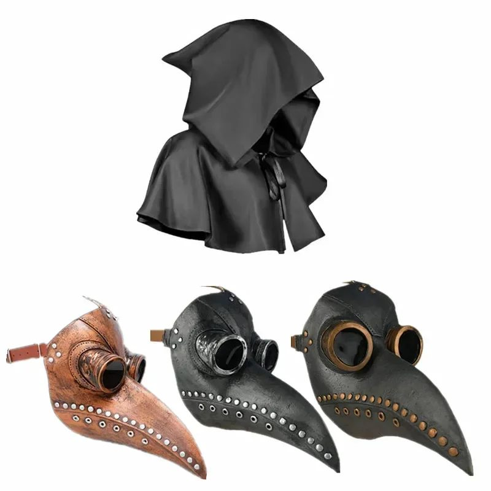

Inicio / Ideas
Ideas para Halloween
Guías cortas para montar la noche: qué ver, a qué jugar, cómo decorar y cómo maquillarse.

Los 6 maquillajes de Halloween más típicos y cómo hacerlos en 15 minutos
Calavera, vampiro, zombi, bruja, gato y payaso. Qué necesitas de verdad y el truco que hace que se vea bien de noche.

8 juegos para una fiesta de Halloween que nadie olvida
Juegos para grupos de seis a veinte personas, sin material raro y con al menos uno que acaba en gritos.

10 actividades de Halloween en casa, para niños y para adultos
Ideas que se montan en una tarde con lo que hay en casa y dos o tres piezas de decoración bien elegidas.

Las 12 películas para una noche de Halloween, de menos a más miedo
Una lista para elegir según quién esté en el sofá: con niños, en pareja o con los amigos que dicen que nada les asusta.